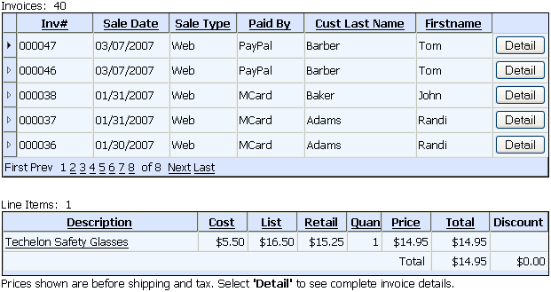

GRDL_INV GridLinker Component
Purpose
The application administrator uses the GRDL_INV gridlinker component to display the GRD_INVHEAD and GRD_INVLINES grid components in a parent-child relationship. The GRD_INVHEAD component displays invoice_header records. The GRD_INVLINES component displays the corresponding invoice_items records.

Description
The GRDL_INV gridlinker component displays the GRD_INVHEAD and GRD_INVLINES grid components in a one-to-many parent-child relationship. The linking field between the two grids is invoice_number.
The GRD_INVHEAD component has the following overrides.
|
style_name = "asw" rows = 5 |
Containers
Contains
See Also